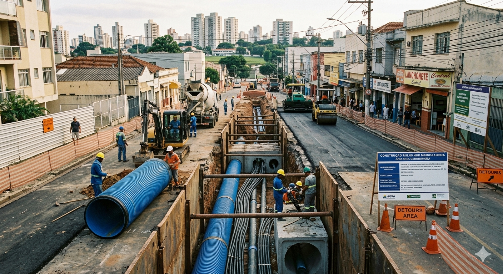

A infraestrutura urbana é a base que sustenta o desenvolvimento de uma cidade. Ela inclui vias, iluminação pública, saneamento, transporte e manutenção de espaços públicos que garantem qualidade de vida, segurança e acessibilidade para todos os cidadãos.

Solicitação para reparo de buracos no asfalto que prejudicam a segurança de pedestres e motoristas.
Obstrução de bueiros e canais de esgoto que causam alagamentos em períodos de chuva.
Ausência de iluminação adequada em áreas públicas, gerando insegurança e risco de acidentes.
Solicitação para poda de árvores em áreas públicas que apresentam risco à população.
Solicitação para reparação de calçadas e passeios públicos em mau estado de conservação.